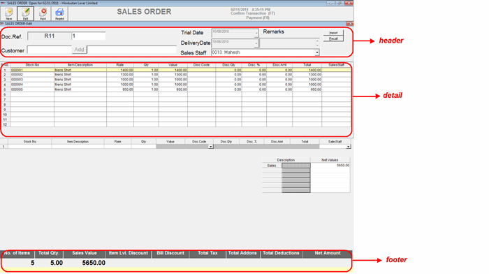

This option allows you to edit a Sales Order.
The SALES ORDER-Edit window is as shown. The fields displayed are indicative and would depend on the slips configuration of your Shoper 9 POS.

Click the links to learn more about each group.
Header: The details like sales order prefix, sales order number and sales order date and time are displayed in the header part. It allows you to accept details like customer code and sales staff code. Apart from this, the header part allows you to import the details of the items to be included in the sales order.
Detail: The detail part of the sales order window has item details grid as well as direct entry grid. The direct entry grid is used to accept the details stock no., item description, rate and quantity and so on, of each item selected for editing in the sales order. Once the item details of a stock item is accepted through direct entry grid and edited, the same is displayed in the item details grid.
Footer: The footer part of the sales order window displays the updated totals like total sales order value, item level discount, total number of items in the sales order and net amount of the sales order and so on. Apart from sales order totals, you are exposed to a separate grid, which displays the total values of sales order, discounts, sales tax exclusively.